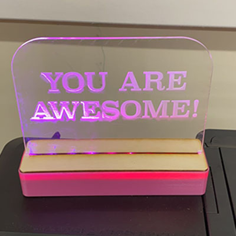
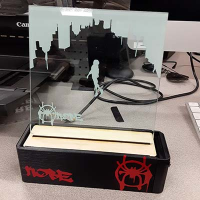
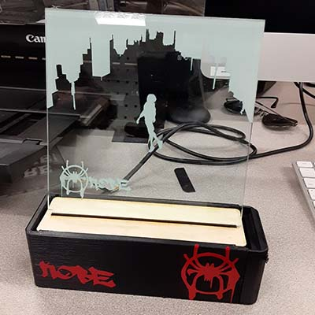

Project: Integrate
Like What's up Danger
Putting it all together
We have learned to use a lot of machines in the fab lab, but until now, Our Projects have only required the used of a single machine. This project would requre using multiple machines for the end result. The assignment was to create a glowing acryllic sign. The lights are programmed with a chip made in the digital lab. The case was 3D printed. The holders for the interior componets and the acryllic design are laser cut. Also, my sign has a few vinyl cut stickers attached.
The Acryllic Sign
for the design, I will be going back to the scene I did for my vinyl cut shirt. I knew instantly that this would be the thing that I would want to see lit as a sign. However, different medium, different design. The shirt's design had a lot going on and the objects in it werer very large, Miles(the person falling) included. I want to remake the design in a way that takes more advantage white space and differently sized objects.
Designing in Illustrator
I retraced the buildings using the pen tool. I wanted the design to have more detail than before. Also, I wanted more of the buildings visible in this design.
I retraced the buildings using the pen tool. I wanted the design to have more detail than before. Also, I wanted more of the buildings visible in this design.
I retraced the buildings using the pen tool. I wanted the design to have more detail than before. Also, I wanted more of the buildings visible in this design.
While Miles is much smaller in relation to the buildings than he was in my vinyl cutting project, he is still larger than normal for the frame. To help make up for that, I moved the buildings upward to also take more advantage of the space I have.
While Miles is much smaller in relation to the buildings than he was in my vinyl cutting project, he is still larger than normal for the frame. To help make up for that, I moved the buildings upward to also take more advantage of the space I have.
For the finishing touch, I reintroduced the graffiti spider-man logo with my name next to it in a font that I found online. There is a lot of white space in this design, but that is intended, as it makes the scenery feel vast in comparison to Miles
Last minute change that I really liked. In the movie, during the scene where the image is from, The song "What's up Danger" by Black Caviar and Blackway is playing and sets the mood for the scene while there is almost no dialog. The finishing touch of the design was adding the spotify code for "What's up Danger" on the side. This addition was inspiered by seeing Aliza's design physically in the lab which I thought was really cool.
Digital Lab: Creating Electronics
First, I used a machine to cut out the PCB and copper circuitry.
Then I used solder to attach the pins, resisters and controller. The solder was a liquid paste at first, but after being heated by a heat gun, it cooled into a solid form, attaching the components.
Then comes programming the chip (as of right now, the chips given to us come preprogrammed, but I am hoping to reprogram a board to glow red on an off at random intervals, if that much is possible with these chips.)
The case to hold it
The case that will hold all of the components has to be designed with a lot in mind, It has to be Hold the laser cut wood in place and keep them well enough in place to be moved without things messing up.I went through a lot of ideas of how to design the case. The design I chose in the end was a two piece design that snaps together into one.
Designing in Fusion360
1. First, I made a sketch of the shell, a litttle bit larger than the wooden sheets, then extruded that to create my first body.
1. First, I made a sketch of the shell, a litttle bit larger than the wooden sheets, then extruded that to create my first body.
2. I then created rails that the middle and bottom wooden pieces could rest in. I ended up not using the bottom sheet.
3. after that, I created a slot that the circuit board for the lights would be able to stay in, as well as a slot in the back for the power adapter.
3. after that, I created a slot that the circuit board for the lights would be able to stay in, as well as a slot in the back for the power adapter.
4. I Then used filet to curve the edges and split body on an offset plane to cut the case in half
4. I Then used filet to curve the edges and split body on an offset plane to cut the case in half
Vinyl Cutting: a final touch
This part was completely unnesesary, and Won't result in me getting a higher grade, but I wanted something to give the case of the sign a little more flair. At first, I thought of embossing My name and the logo onto the case, but it would be really hard to see on a black case. I decided to use the vinyl cutter to make some red stickersto put on the black case, making it match the aesthetic of Miles Morales's spider man even more
The final Product
 
